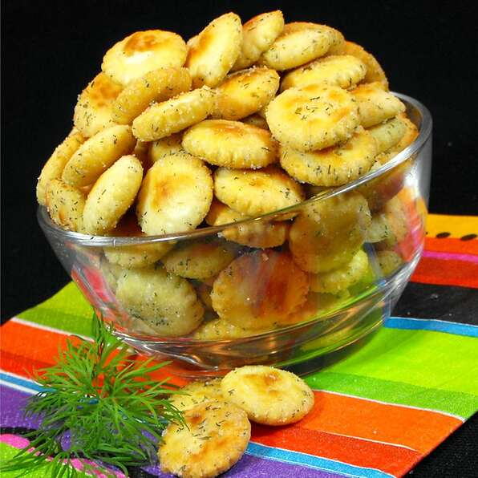

Oyster Crackers Recipe

Description
Oyster crackers coated in delicious ranch-style dressing.
Ingredients
- 1 (1 ounce) package ranch dressing mix
- 1 teaspoon garlic powder
- ½ teaspoon dried dill weed
- ½ cup vegetable oil
- 1 (12 ounce) package oyster crackers
Directions
- Mix together ranch dressing mix, garlic powder, dill and vegetable
oil. Add crackers and mix gently until the crackers are coated with
the mixture.
- Stir every 10 minutes for 1 hour. Store in an airtight
jar.